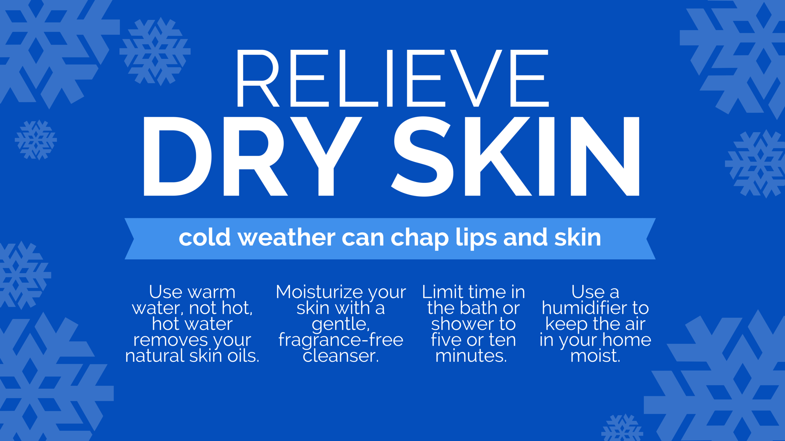
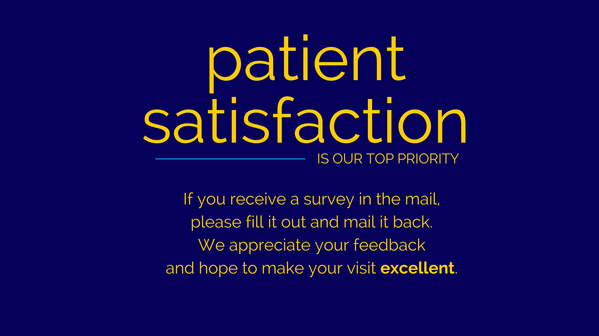
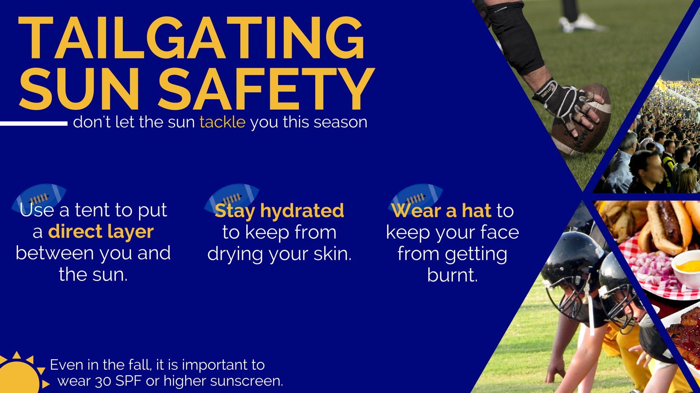

This website was designed, developed and coded by Kelly Norris. Scroll through the page to see other design and web work I have created.
All designs created for the University of Michigan Health Systems, Department of Dermatology to display on lobby television displays in multiple locations.



A timeline of 'Once'